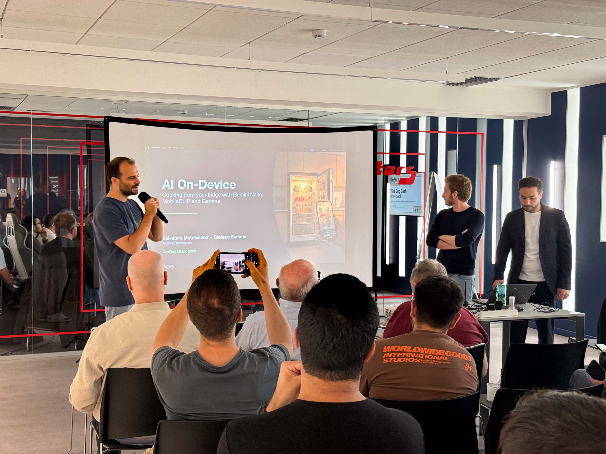
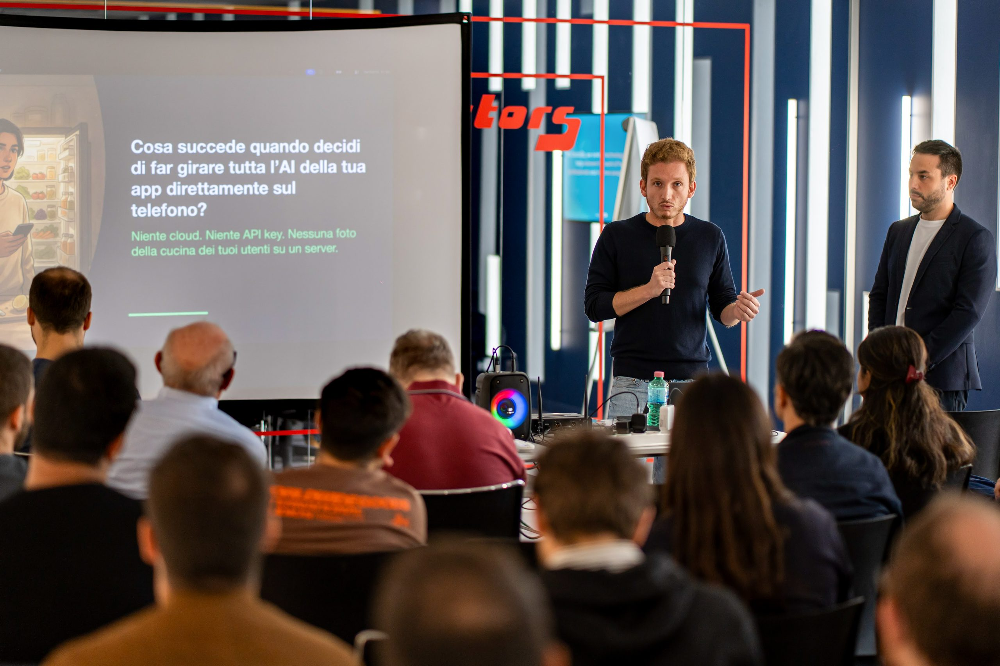

AI Pantry - Cook from Your Fridge
AI Pantry is an Android app with a fully on-device AI pipeline, and the demo of AI On-Device, my DevFest Milano 2026 talk with Stefano Soriano: you photograph your fridge and your pantry, the app recognises the ingredients and generates recipes that use only what you already have. Three AI engines cooperate, each on the job it was built for.
Inference is 100% on-device: photos and prompts never leave the phone. The app's own code makes no network calls — the only INTERNET permission in the merged manifest comes from ML Kit's telemetry library, which sends usage metrics, not photos or prompts. The models arrive through the install channel — Google Play AI packs for the Play Store release, or embedded in the APK for testing — and never through an in-app download.
3AI engines on the phone
863ingredients in a text file
2.6 GBmodel, as AI packs
0photos sent to a server
The demo
From the fridge to a recipe, on the phone
The whole flow in three and a half minutes, recorded on the phone with the app in Italian. The fridge first: MobileCLIP goes over the photo zone by zone, 43 of them, and every ingredient appears on the photo as soon as it is recognised. Then the pantry, the same way.
With 27 ingredients in the inventory, What can I cook? writes four recipes one after the other, and opening one — pasta with tomato and mozzarella, a mushroom risotto — writes its quantities and its steps on the spot, with Gemma 4 E2B running on LiteRT-LM. Nothing in the video leaves the phone.
The talk
AI On-Device — Cooking from your fridge with Gemini Nano, MobileCLIP and Gemma follows the path that led to this architecture. Stefano Soriano and I gave it at DevFest Milano 2026, on Saturday 10 October at the Randstad Box, 11:30 in the Coworking track: the photos and a clip from the talk are on the DevFest page. The slides, in Italian and English with speaker notes, are in the GitHub repo, next to the code, and the whole talk has its own page too: every slide with our speaker notes, to read as a document or play as a presentation, in Italian or English, with the demo and all the photos.
- Gemini Nano was the obvious choice, but it runs only on recent flagships: an upgrade, never the base.
- Gemma 4 E2B doing everything, detection and recipes, worked, but a single scan took 5-10 minutes on a Pixel 7: the multimodal prefill and the token-by-token decode cost too much on a phone.
- MobileCLIP-S2 zero-shot: recognition does not need a model that writes, but one that compares. Same phone, same photo: from minutes to seconds.
- Gemma is back for the only task that really needs an LLM: generating the recipes, text only.
Same phone, same photo of the fridge
Gemma 4 E2Ban LLM that looks, then writes
5–10 min
MobileCLIP-S2an encoder that compares
~20 s
The lesson: before asking how to make a model faster, ask whether it is the right model.

The opening question: what if all of the AI ran on the phone?
Me, a couple of minutes in
The three AI engines
- Gemini Nano (AICore, via ML Kit GenAI) — ingredient detection on the devices that support it (Pixel 9/10/11 except the "a" models, Galaxy S26, …), with a multimodal photo+text prompt, and, where the phone has Gemini Nano 4 (the production version of Gemma 4), the recipes too. It weighs zero MB in the APK: the model belongs to the system.
- MobileCLIP-S2 (LiteRT) — zero-shot detection on any device: the everywhere-fallback and the default engine.
- Gemma 4 E2B (LiteRT-LM) — recipe generation on every other phone, the only genuinely generative task, and the safety net if Gemini Nano 4 fails.
Three engines, two interfaces, one app
Demo flow
- Scan — photograph the fridge, then "Scan another" for the pantry; a photo from the gallery works too. While MobileCLIP works, the photo shows the areas it is looking at as a grid, coarse then fine, and every ingredient appears as soon as it is recognised. The results sheet shows which engine did the work.
- The detected ingredients, with their confidence (anything below 22% is discarded), land in the local inventory stored in Room.
- What can I cook? — the LLM writes 4 recipes with time, difficulty and the ingredients they use, each one on screen as soon as it is written; the first list is written ahead in the background, so it is often ready before you ask. The app itself rechecks the missing ingredients against the inventory and puts the recipes that need more of them last. Opening a recipe generates its quantities, step-by-step instructions and variations on demand.
- More recipes adds 4 new ones, Regenerate replaces the list: every round uses a different part of the inventory, and the dishes already listed are dropped, even under another name.
- The app follows the phone's language, Italian or English: the UI, the prompts, the ingredient names and therefore the recipes.
- A hidden diagnostics page shows heat, throttling, memory and the state of every model, and lets you pick the model for each task by hand — Gemini Nano, Gemma 4 E2B or E4B on GPU or CPU, MobileCLIP-S2 — with speed and temperature drawn over every screen, to compare them on the same phone.
Architecture
Every feature follows Clean Architecture + MVI (data / domain / presentation), with dependency injection through Koin:
- capture/ — CameraX and photo picker;
AdaptiveIngredientDetectorselects the engine at runtime, on every scan: the one picked on the hidden page, otherwisecheckStatus()on Gemini Nano and a silent fallback to CLIP if Nano is unavailable or fails. MobileCLIP-S2 and EmbeddingGemma 2 share the same zero-shot scan,ZeroShotScan. - inventory/ — Room database, ingredient inventory, model status banner, keyword emoji resolver.
- recipes/ —
RecipeRepositoryImplkeeps a list per ingredient set, writes one answer at a time with what is on screen first, works ahead in the background and resumes after an interruption;LlmRecipeGeneratorstreams a two-stage generation with silent retries, on Gemini Nano 4 or Gemma;RecipeTitleRulesandSameDishdrop odd and repeated dishes, and a tolerantRecipeJsonParsercopes with the malformed JSON small models occasionally emit. - diagnostics/ — the hidden page: heat and throttling, battery, memory, models and their choice, recipe cache.
- core/data/ai/ —
LlmCatalog,ModelSource(AI packs or bundled assets),ModelRepositoryfor automatic provisioning,LlmEngineHolderfor the engine cache and the GPU/CPU policy,GeminiNanoWriterfor the recipes on Gemini Nano 4.
Ingredient recognition without a training set
The MobileCLIP-S2 image encoder (~140 MB, LiteRT) embeds multi-scale crops of the photo — a grid at 50% and 33% of the short side, on a pool of interpreters running in parallel — and compares them by cosine similarity against the text embeddings of 863 ingredients + 12 "distractor" labels, precomputed offline.
Recognising is comparing
The photo crop and every label become vectors in the same 512-dimensional space, shown here in two. The crop's vector swings towards the label it matches best, and the highest cosine similarity wins.
No tokens are generated: it is a dot product, not a paragraph, so there is no decode loop to wait for and no JSON to parse.
The result is that the "classifier" is a text file: one label per line, with aliases, distractor labels that absorb the food-free crops, and the Italian name of every ingredient for phones set to Italian. Adding an ingredient means adding a line and re-running the script that recomputes the embeddings — no training, no dataset, no retraining cycle.
The same scan also runs on EmbeddingGemma 2, the open embedding model built on Gemma 4 that Google released in October 2026: it puts photos and words in the same space, understands over 100 languages and comes under Apache 2.0, while MobileCLIP's weights are for research only. It already recognises the demo's ingredients; for now, on a Pixel 7, it is slower than MobileCLIP.
Delivering a 2.6 GB model
Gemma 4 E2B ships in the .litertlm format at ~2.6 GB, with mixed 2/4/8-bit quantisation. Two delivery channels, both without any in-app HTTP download:
- Play for On-device AI — for the Play Store release: 3 fast-follow AI packs of ~0.85 GB each (Play caps a pack at 1.5 GB), reassembled on first launch and then removed.
- Embedded in the APK — for testing: 3 chunks in the assets, since AGP does not package assets over 2 GB. A ~2.9 GB APK to hand out to testers, with zero action required from them.
Every model travels differently
AICore
Gemini Nano0 MB
it belongs to the systemMobileCLIP-S2
~140 MB
an asset in the APKAI pack 1AI pack 2AI pack 3
Gemma 4 E2B2.6 GB
3 fast-follow AI packsAfter a few seconds of "Preparing Gemma 4 E2B…" on first launch, the app is ready and offline forever. On phones with Gemini Nano 4, Gemma isn't even loaded at startup: Nano writes the recipes on the phone's AI accelerator, and Gemma takes over only if Nano fails.
GPU/CPU resilience
The LiteRT-LM runtime is GPU-first, and a broken GPU shows up in two very different ways: a hang in a native call that cannot be interrupted, or an immediate exception on the first inference (for example when there is no OpenCL, where engine initialisation succeeds anyway). LlmEngineHolder catches both — a watchdog with a timeout on a detached job for the hangs, an exception catch for the rest — and marks the GPU as broken persistently for that model, so the following launches go straight to multi-threaded CPU without paying for the attempt again. A micro-inference probe at warm-up triggers the fallback at startup, so the user's first generation never waits for it.
The weights LiteRT-LM lays out for the hardware — XNNPack caches for the CPU, ML Drift caches for the GPU — are written into the app's own folder and kept across launches: on a Pixel 7 the engine is ready in under 2 seconds on the CPU instead of ~13, and in about 4 on the GPU instead of ~47.
Engine ready on a Pixel 7
CPUfirst launch
~13 s
CPUXNNPack cache kept
< 2 s
GPUfirst launch
~47 s
GPUML Drift cache kept
~4 s
Stack
Kotlin 2.4 · Jetpack Compose (Material 3) · CameraX · ML Kit GenAI Prompt API (Gemini Nano / AICore) · LiteRT (MobileCLIP-S2) · LiteRT-LM (Gemma 4 E2B, EmbeddingGemma 2) · Play AI Delivery · Room · Koin · Navigation Compose · kotlinx-serialization
AI Pantry is my playground for on-device generative AI on Android: model delivery at the gigabyte scale, runtime engine selection, hardware fallbacks, and a privacy guarantee built into the architecture: nothing the user photographs or asks ever leaves the phone.

The whole talk, on its own page
AI On-Device, slide by slide
All the slides with our speaker notes, the real screens of the app, the demo recording and every photo from the room — to read as a document or to play as a presentation, in Italian or English.
- 29 slides
- speaker notes
- demo recording
- 22 photos
July - October 2026.